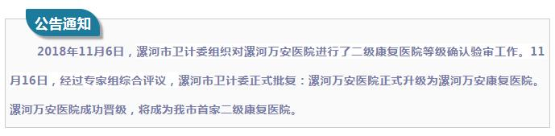
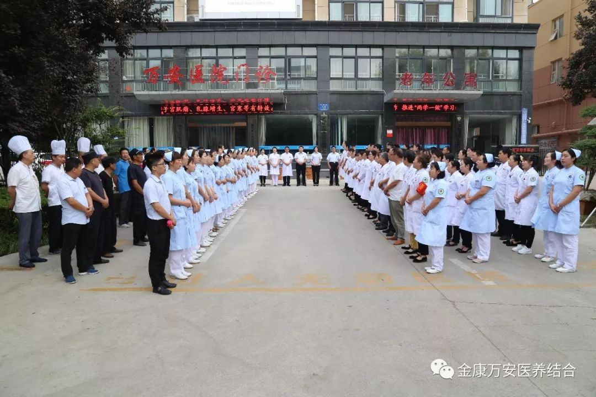

万安康复医院新闻
漯河万安医院荣升为漯河万安康复医院
人气: "" 时间：2018-11-17


漯河万安医院荣升漯河万安康复医院
漯河万安医院位于风景秀丽的沙澧河风景区长江路中段13号，比邻漯河大学北门斜对面，西邻107国道及漯河高铁西站，十分钟即可达市中心商业圈，交通便利。漯河万安康复医院占地总面积4600平方米，总建筑面积11000平方米，目前设有床位120张，职工169人，其中专业技术人员132人，医院开设有康复科、内科、外科、妇科、中医科、医学检验科、医学影像科、超声诊断专业等科室，拥有飞利浦16排CT、普利德PLD5600全自动胃肠造影DR一体机、全数字彩色多普勒超声诊断仪、心电工作站、动态心电监护仪、动态血压监护仪、彩超、微波治疗仪、心电监护仪、全自动生化分析仪、美国LEEP刀、数码阴道镜、经颅多普勒血流分析仪、高频治疗仪、免疫三氧治疗仪、臭氧治疗仪、蜡疗机、智能数码多功能治疗仪等先进医疗设备。

目前，漯河万安康复医院康复科现有医护团队15人。其中副主任医师1名，主治医师2名，康复师3名，均在国内康复医学科进修培训，具有丰富的临床经验。康复科设有门诊部，住院部，其中门诊面积达500平方米，设有针灸推拿治疗室，中药熏蒸治疗室，PT运动治疗室、OT作业治疗室、容大五行颈腰椎综合治疗室、物理因子治疗室。病区面积800平方米，设置床位30张，全区治疗环境温馨舒适。
漯河万安康复医院院长 王卫峰：进入二级医院行列，无论是从医院的规模、管理，还是医疗服务的范围、收费，甚至是在医疗质量的要求上，都和一级医院使用完全不同的标准，都是一个全新的挑战和又一个发展良机，以后我们继续以卓越的医疗技术、优异的医疗服务、科学的诊疗手段，全力打造优质、高效、廉价、便捷的医疗服务，真情回馈每一位患者。 让老百姓满意，为漯河人民健康保驾护航。”